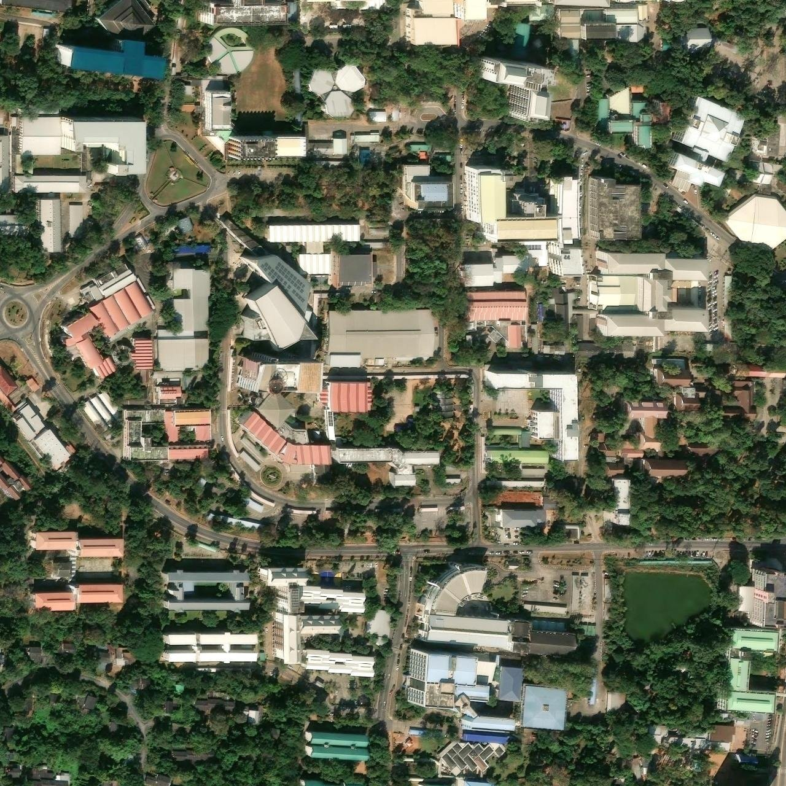

กำลังสร้างพื้นที่สามมิติคณะวิศวกรรมศาสตร์ · มหาวิทยาลัยขอนแก่น
เปิด WebGL ไม่สำเร็จ กรุณาเปิดการเร่งกราฟิกในเบราว์เซอร์
ตึกเพียรวิจิตรPIENVICHIT · EN 16
W A S D / ลูกศร เดิน · ลากเมาส์
มองรอบตัว

EN KKU · CAMPUS
Mini-map imagery © Esri, Maxar, Earthstar Geographics · Ground modeled in
3D
เช้า
ไฟทางเท้าจะเปิดอัตโนมัติในโหมดกลางคืน